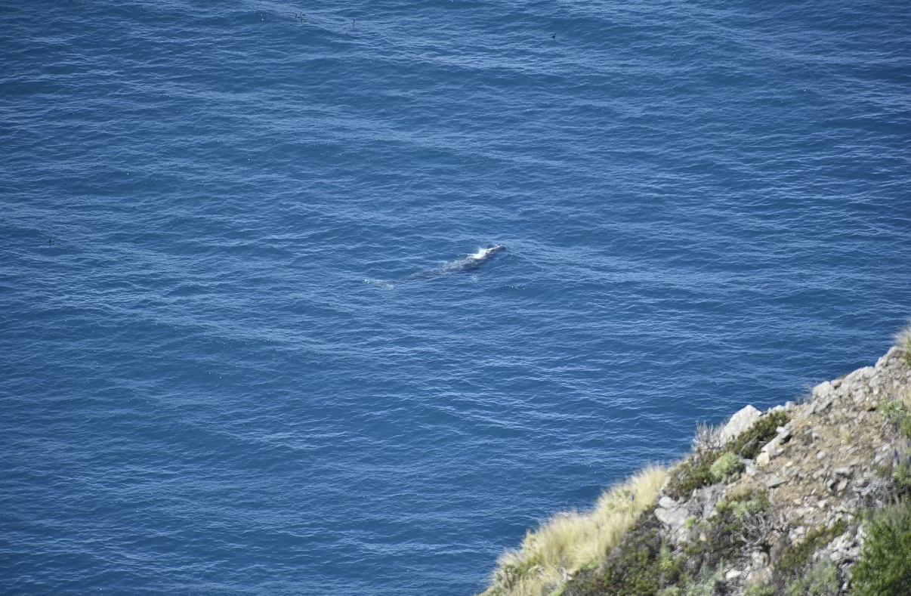

Historical weekly observations, not current conditions.
Humpback whale sightings appeared to be past their seasonal peak; some were moving farther offshore. Large pods of long- and short-beaked common dolphins continued to stampede through the bay. Visiting orca pods had become less frequent. Deep low-frequency whale calls were reported on the hydrophone, along with humpback songs at night.
Ancient murrelets, rhinoceros auklets and a fork-tailed storm-petrel near Wharf 2 were featured. The original update referred to photographs not included with this text copy.
Alongside this week's observations, the source author recalls watching gray whales migrating past Big Sur from Highway 1 in March, two years earlier. This is historical context, not an October 8–14 sighting.

Moon jelly ephyrae have gastrovascular canals that distribute nutrients throughout their developing bodies, including their lappets. Digested food can lend visible color to the canals.
The original Splash Zone opened in 2000 and was renovated in 2008. The weekly report describes Ocean in Motion as a new exhibit with a different layout and new interactives, not merely a third renovation. Early access for members and donors was discussed for late October and early November 2026; verify event details before advising visitors.
Big-Bellied Seahorse — Hippocampus abdominalis. Male pregnancy, suction feeding, bony armor, camouflage, coastal habitat and conservation are covered in the separate development guide.
Humpbacks; orcas (CA51As with CA50B, Aurora’s pod and CA39As, Hopper’s pod); Risso’s, common and bottlenose dolphins; sea otters; sea lions; harbor seals; pink-footed, black-vented, sooty and Buller’s shearwaters; northern fulmars; black-footed albatrosses; black, ashy and fork-tailed storm-petrels; pelicans; murres; rhinoceros and Cassin’s auklets; ancient and Craveri’s murrelets; cormorants; gulls; terns; jaegers; phalaropes; red-breasted mergansers; moon jellies; common and hoodwinker sunfish.
Source: supplied Naturalist weekly update, Bay Watch October 8–14, 2026. Summary only; preserve original source separately.